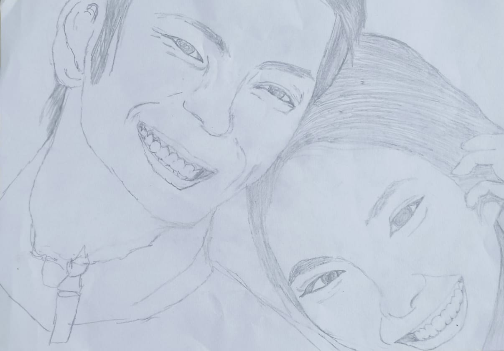

🨠Featured Drawings
🦠Tanuki – Mythical Japanese animal. Sketched in realism using HB pencils.

✍️ Expressive pencil art — realism and shading inspired by Japanese emotion-based art.

🖤 Detail-rich drawing capturing fine emotion with clean strokes and Japanese calmness.

🯠Fierce and elegant — showcasing raw emotion in pencil form, with brush-like strokes.